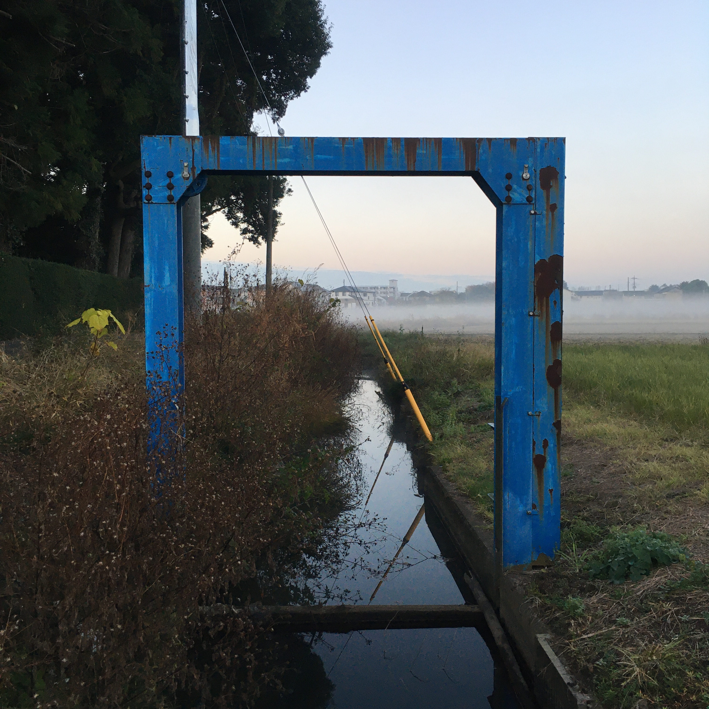

Torii in the morning mist
Ang torii ay isa sa mga natatanging tanawin sa Japan at karamihang nagpapahiwatig ng pasukan sa isang Shinto shrine. Ito ang naghihiwalay sa pangkaraniwan at sagrado, material at spiritual.
Karamihan ng mga barangay sa Japan ay may sari-sariling Shinto shrine at may ganitong torii sa harapan. Kung pupunta ang mga bata sa mga shrine na ganito ay iniiwan nila ang bisikleta sa labas ng torii, isang tanda ng respeto sa pagpasok sa shrine. Maari sigurong isipin na ang torii ay parang pintuan ng simbahan kumbaga.
Ang torii ay sinusulat nang 鳥居, “ibon” at “tirahan”, kaya maaring isipin na dapuan ng ibon ang mga ito (wala pa akong nakikitang ibon sa itaas ng torii).
Itong isang irrigation controller na piniktyuran ko sa isang mahamog na umaga ay parang torii ang hitsura, naghihiwalay ng material na mundo kung saan ako nakatayo at spiritual na lugar kung saan may parang ulap sa mga bukirin.
